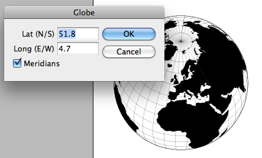
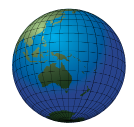

World Map
Script for InDesign CS3 and 4 by Jongware.
Note: the following text was written by the author of the script.
A fun little script, could be useful if you are in dire need of some clip art — or just want to see something else than text, text, text: worldmap.js
This is a Javascript implementation of a program I had on the hard disc of several consecutive computers, going back to the late '80s. This version was an implementation in C, which in turn was based upon a Pascal program: CARTOG.PAS, accompanying "Mapping the World in Pascal" by Robert Miller and Francis Reddy, BYTE, December 1987, page 329
What does it do? It draws a world map. That's all
Written for CS4 (it just might work on CS3, but not on older versions). Simply double-click to run — it ought to do the rest automatically. If you want to see your location from outer space, go to LATITUDE et LONGITUDE de quelques Villes (which was the first comprehensive listing I found; there are lots of others) and see if your hamlet is listed. You can enter coordinates either as positive/negative values, or succeed them with "E" or "W" and "N" or "S". Only decimal notation is supported — sorry, minutes & seconds was too much work.
What does it look like? Well, here's where I live:

TECHNICAL INFO
The original C (slash Pascal) file came with a coordinate file, but that was extremely rough. I thought it would look nicer with a few more decimals of accuracy, so I visited the Natural Earth website and downloaded their coastal outlines set. Being unnaturally cautious, I downloaded their smallest file — it's still more than 5,000 coordinates. I don't think it's worth to throw in more vectors at this scale (no, I'm not going to write a full browse-zoom-and-draw-map applet). The outline files are binary encoded, so it took some sleuthing to write out the info I needed in ASCII form. No problem at all! (And I suspect the file format is somewhere on that site, but I didn't even bother to check  ). Then I had to manually close all open paths, so ID could fill the objects for me.
). Then I had to manually close all open paths, so ID could fill the objects for me.
Then it came down to getting the vectors on screen, first in a Mercator (plain) projection — that code is still in the script somewhere —, then in orthogonal projection. The original program only could handle lines, so I had to find a way to draw the solid objects going over the edge (and that's where the large-land-mass bug slipped in). For the rest, it's all maths, maths, maths, with some JS cleverness to make it run at a fair speed. — a small improvement in case anyone wants to give the world some color: in the new version (still called worldmap.js, though), you can ungroup once and you get three separate parts: the globe, the land masses (a group in itself), and the meridians (also a group of its own).
InDesign even allows the hundreds of little land masses to be combined into a single Compound path, so you can give them a shared gradient:
